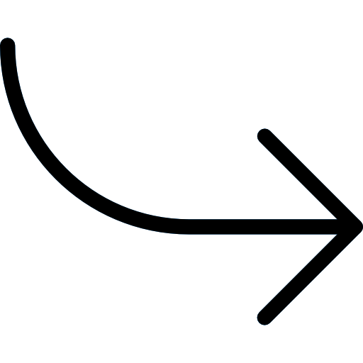

Course Design Project
Preparing ESL Learners for Reading in College
Aug 2021 - Dec 2021
Role: Individual Project
Aug 2021 - Dec 2021
Role: Individual Project
Project Overview
As part of a course in the METALS program, each student is required to create a fully developed course design for 10 hours of instruction.
For my project, I developed a course focused on helping Chinese international students prepare for the kinds of reading tasks they will need to complete as part of college-level courses at American institutions.
As an optional summer preparation course, the instruction uses a blended learning appraoch to familiarize students with reading comprehension in English and the culture of reading at American universities.
This project follows the pattern of backwards design by first specifying who the learners are, followed by the goals of the course, then the assessment and instructional design of the course, and finally, evaluation research design.
Project Contents
Learners in Context
- developmental level
- prior knowledge and experiences
- individual differences that might affect learning

Goal Specification
- high-level learning goals
- relevant standards
- learning goals divided into conceptual knowledge, procedural skills, dispositions, and metacognitive goals
- complete task analysis for all learning goals
Assessment Design
- general assessment strategy
- overview of assessment evidence
- evaluations of sufficiency, reliability, validity, and equity
- assessment and feedback timeline
- detailed examples of each assessment type including rubrics and grading criteria
Instructional Design
- classroom climate (phsyical, social, etc.)
- routines and norms
- overview of alignment using WHERETO framework
- complete timeline of instructional units
- detailed examples of each instructional activity
Evaluation Research Design
- identification of course's active elements
- fidelity checklist for teachers to use during the course
- experimental design for evaluating educational impact
- project self-assessment
Read the full report:
Google Drive